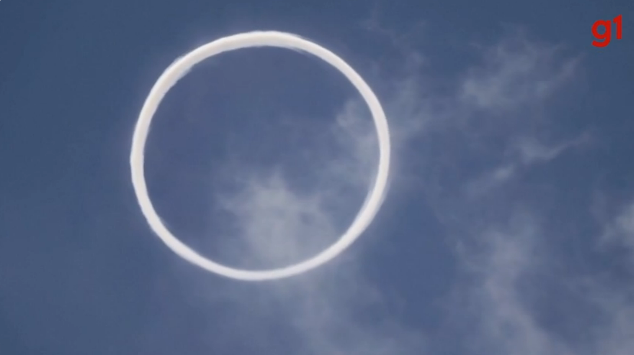

Por que vulcão na Italia esta soltando aneis de fumaça
Publicado em 10 de Abril de 2024
Conhecidos tecnicamente como 'anéis de vórtice vulcânico', os fenômenos são formados principalmente por vapor d'água. Eles aparecem quando uma bolha de magma explode e lança um jato de ar através de um buraco circular dentro da cratera do vulcão....
Leia mais